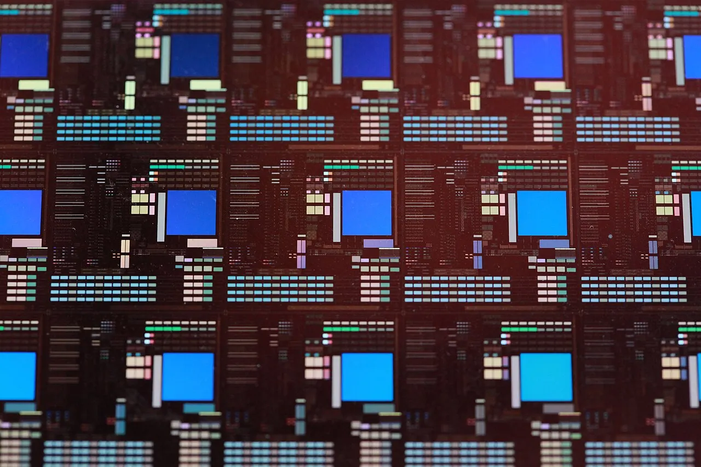

큰 판이 항상 싸지는 않습니다

패널레벨 패키징은 원형 웨이퍼가 아니라 큰 사각 패널 위에서 여러 칩을 한꺼번에 처리하는 방식입니다. 면적을 더 효율적으로 쓰면 같은 공정에서 더 많은 패키지를 만들 수 있다는 기대가 있습니다. 특히 고성능 컴퓨팅과 AI 칩처럼 패키지 크기가 커지는 흐름에서는 매력적인 방향입니다.
하지만 큰 판은 다루기 어렵습니다. 공정 중 온도가 바뀌면 패널이 휘고, 미세 배선과 칩 위치가 조금만 어긋나도 수율이 떨어집니다. 면적이 넓어질수록 작은 오차가 전체 패널에 누적됩니다. 그래서 패널레벨 패키징의 경제성은 면적보다 뒤틀림과 정렬을 얼마나 잡는지에 달려 있습니다.
반도체 패키징에서 비용은 좋은 칩 하나가 아니라 불량을 빼고 남는 양품 수로 결정됩니다. 패널 한 장에 많은 칩을 올렸는데 일부 공정에서 불량이 늘어나면 기대했던 원가 절감은 사라집니다. 생산성은 장비 속도보다 수율 곡선이 말해 줍니다.
뒤틀림은 조용한 불량입니다
패널이 휘면 배선 형성, 노광, 본딩, 몰딩, 절단 단계가 모두 영향을 받습니다. 눈으로 보기에는 큰 문제가 없어도 마이크로미터 단위 정렬에서는 치명적일 수 있습니다. 특히 고대역폭 메모리와 로직 칩을 가까이 붙이는 고급 패키징에서는 간격과 평탄도가 중요합니다.
유리 기판이 주목받는 이유도 여기에 있습니다. 유리는 평탄도와 치수 안정성에서 장점이 있지만, 깨짐과 가공 난이도, 구멍 형성, 금속 배선 신뢰성 같은 과제가 남아 있습니다. 소재 하나가 모든 문제를 해결하기보다 공정 전체의 균형을 바꿉니다.
뒤틀림을 줄이려면 소재의 열팽창 계수, 두께, 접착층, 몰딩 조건, 냉각 속도가 함께 맞아야 합니다. 이 조합은 제품마다 다르고 고객 칩의 크기와 배치에 따라 달라집니다. 따라서 패널레벨 패키징은 범용 공정보다 맞춤형 엔지니어링 성격이 강합니다.
검사 장비가 병목입니다
패널이 커지면 검사도 어려워집니다. 작은 불량을 빠르게 찾고, 어느 단계에서 문제가 생겼는지 추적해야 합니다. 고급 패키징은 전공정처럼 미세한 관리가 필요하지만, 패널 크기와 재료가 다르기 때문에 기존 장비를 그대로 쓰기 어렵습니다.
본딩 장비와 노광 장비, 세정 장비, 검사 장비가 모두 같은 속도로 발전해야 합니다. 한 장비가 늦으면 전체 생산라인의 처리량이 묶입니다. 반도체 산업에서 새로운 공정이 늦게 확산되는 이유는 핵심 장비 하나가 아니라 장비 생태계 전체가 준비돼야 하기 때문입니다.
고객 인증도 시간이 걸립니다. AI 가속기나 자동차용 반도체처럼 신뢰성이 중요한 제품은 열, 습도, 진동, 장기 사용 테스트를 통과해야 합니다. 수율이 좋아 보여도 신뢰성 데이터가 부족하면 양산 물량은 천천히 늘어납니다.
수익성은 램프업 속도에 달렸습니다
패널레벨 패키징 기업의 실적을 볼 때는 기술 발표보다 램프업 속도가 중요합니다. 파일럿 라인은 가능성을 보여 주지만 대량 생산은 다른 문제입니다. 고객 설계가 확정되고, 장비가 안정적으로 돌고, 양품률이 올라야 매출과 이익이 따라옵니다.
초기에는 감가상각과 공정 튜닝 비용이 먼저 들어갑니다. 수율이 낮은 구간에서는 매출이 늘어도 이익률이 낮을 수 있습니다. 반대로 고객 물량이 안정되고 수율이 올라가면 같은 장비에서 더 많은 양품을 뽑아 수익성이 개선됩니다.
패널레벨 패키징은 차세대 패키징의 중요한 후보입니다. 다만 투자 판단에서는 큰 패널이라는 그림보다 뒤틀림 관리, 검사 속도, 고객 인증, 양산 수율을 먼저 봐야 합니다. 그 숫자들이 맞아야 기술이 비용 절감으로 바뀝니다.
관련 영상
유리 기판 강점과 패키징 업체 개발 현황
패널레벨 패키징은 반도체 패키징의 면적 공식을 바꿀 수 있습니다. 그러나 큰 판을 쓴다는 사실만으로 원가가 내려가지는 않습니다. 뒤틀림과 수율, 검사 병목을 넘는 회사가 실제 승자가 됩니다.
패널레벨 패키징은 면적보다 수율과 뒤틀림이 비용을 가릅니다을 볼 때는 발표 직후의 반응보다 다음 분기까지 이어지는 숫자를 함께 확인하는 편이 좋습니다. 단기 뉴스는 방향을 빠르게 바꾸지만 실제 변화는 계약, 예산, 생산, 소비 습관처럼 느린 항목에서 굳어집니다. 이 차이를 나누어 보면 과장된 기대와 실제 지속 가능성을 구분할 수 있습니다.
가장 실용적인 점검 방법은 한 가지 지표에 기대지 않는 것입니다. 가격, 수요, 비용, 규제, 실행 시간이 같은 방향으로 움직이는지 확인해야 합니다. 어느 하나만 좋아도 나머지가 따라오지 않으면 결과는 늦어지고, 여러 조건이 동시에 맞으면 변화는 예상보다 빠르게 확산될 수 있습니다.
이 주제는 한 번의 결론보다 관찰 순서가 더 중요합니다. 먼저 현재 병목을 확인하고, 그다음 누가 비용을 부담하는지 보며, 마지막으로 그 부담이 가격이나 행동 변화로 이어지는지 봐야 합니다. 그렇게 읽으면 제목보다 구조가 먼저 보입니다.
패널레벨 패키징은 면적보다 수율과 뒤틀림이 비용을 가릅니다을 볼 때는 발표 직후의 반응보다 다음 분기까지 이어지는 숫자를 함께 확인하는 편이 좋습니다. 단기 뉴스는 방향을 빠르게 바꾸지만 실제 변화는 계약, 예산, 생산, 소비 습관처럼 느린 항목에서 굳어집니다. 이 차이를 나누어 보면 과장된 기대와 실제 지속 가능성을 구분할 수 있습니다.
가장 실용적인 점검 방법은 한 가지 지표에 기대지 않는 것입니다. 가격, 수요, 비용, 규제, 실행 시간이 같은 방향으로 움직이는지 확인해야 합니다. 어느 하나만 좋아도 나머지가 따라오지 않으면 결과는 늦어지고, 여러 조건이 동시에 맞으면 변화는 예상보다 빠르게 확산될 수 있습니다.
이 주제는 한 번의 결론보다 관찰 순서가 더 중요합니다. 먼저 현재 병목을 확인하고, 그다음 누가 비용을 부담하는지 보며, 마지막으로 그 부담이 가격이나 행동 변화로 이어지는지 봐야 합니다. 그렇게 읽으면 제목보다 구조가 먼저 보입니다.
패널레벨 패키징은 면적보다 수율과 뒤틀림이 비용을 가릅니다을 볼 때는 발표 직후의 반응보다 다음 분기까지 이어지는 숫자를 함께 확인하는 편이 좋습니다. 단기 뉴스는 방향을 빠르게 바꾸지만 실제 변화는 계약, 예산, 생산, 소비 습관처럼 느린 항목에서 굳어집니다. 이 차이를 나누어 보면 과장된 기대와 실제 지속 가능성을 구분할 수 있습니다.
가장 실용적인 점검 방법은 한 가지 지표에 기대지 않는 것입니다. 가격, 수요, 비용, 규제, 실행 시간이 같은 방향으로 움직이는지 확인해야 합니다. 어느 하나만 좋아도 나머지가 따라오지 않으면 결과는 늦어지고, 여러 조건이 동시에 맞으면 변화는 예상보다 빠르게 확산될 수 있습니다.